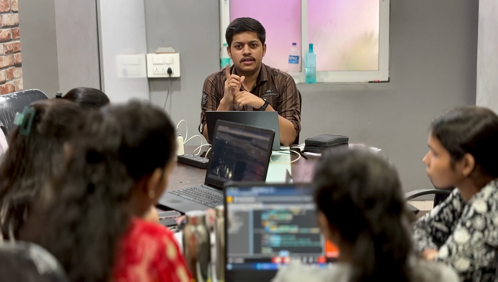
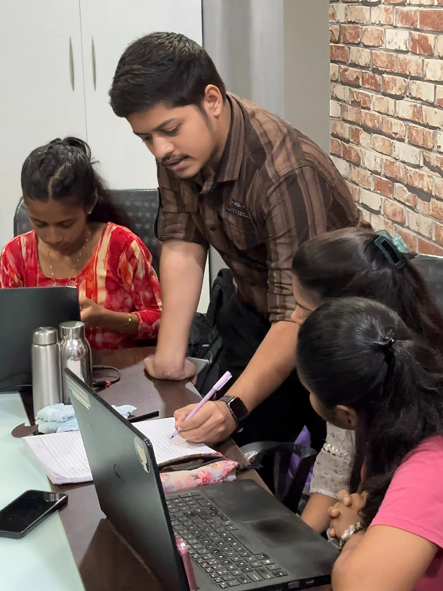
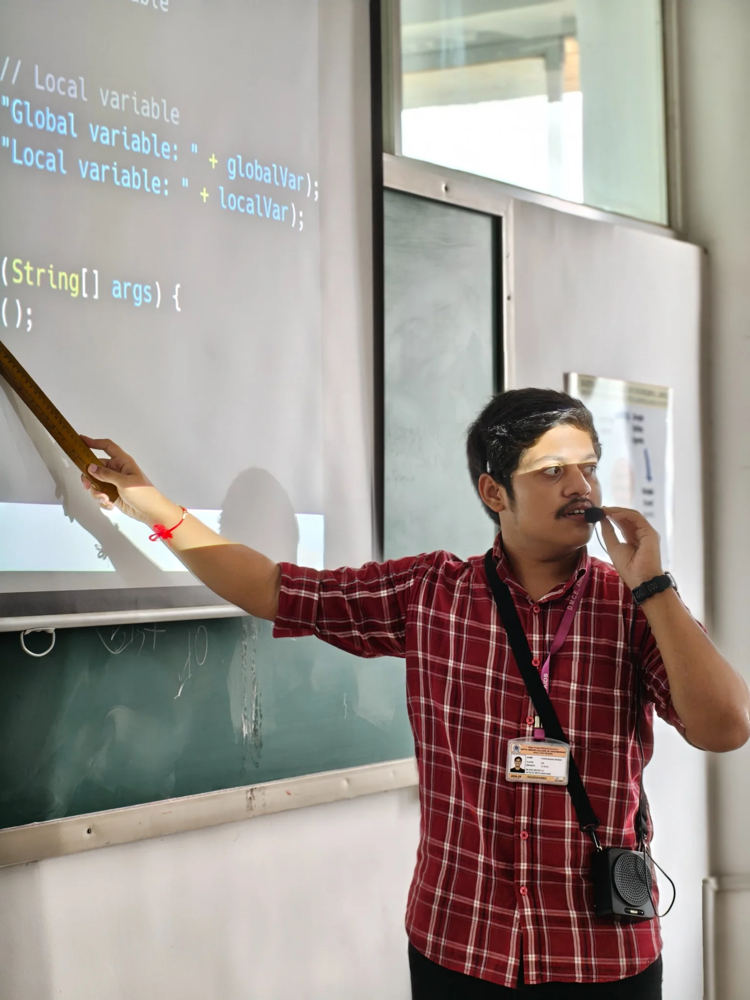
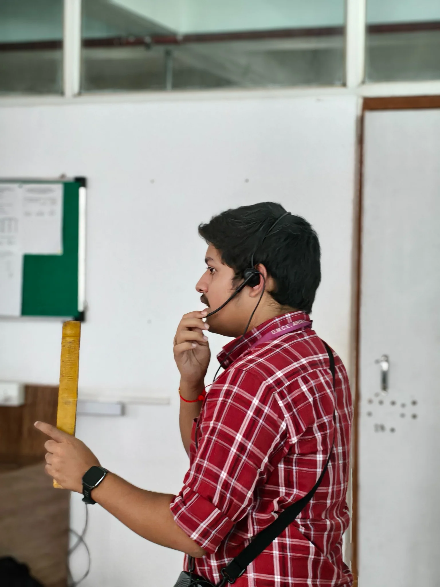
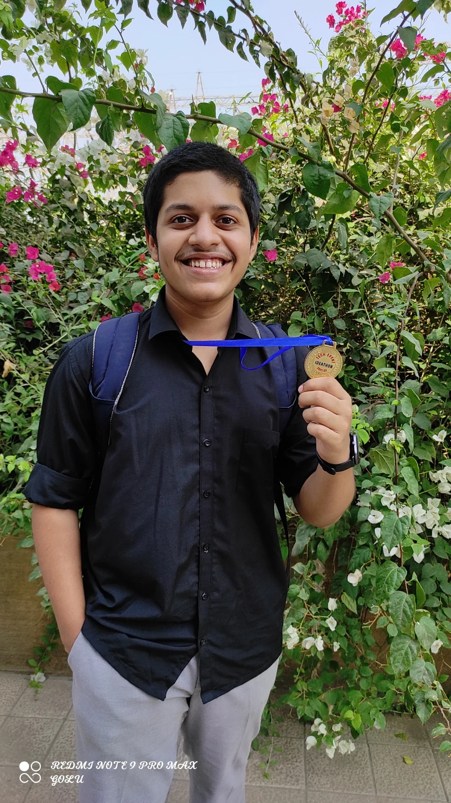

Vol. 01 · The builder's issueMumbai, IndiaEst. 2005 ·
Always in progress
THE MANAS CHRONICLE
A journal of products, people, code & curious detours
The front page · 01
Building things. Asking better questions.
I'm Manas — a product-minded engineer who enjoys taking an idea from a rough note to something people can
actually use. Somewhere between software, design, data and the human side of building.
Independent thinkingProduct / Engineering / AIMade with intent,
not templates
About the editor
02 / The perspective
An ongoing experiment in making useful things.
I like the space where a good product idea meets thoughtful engineering — where the
details matter, the interface feels considered, and the technology quietly does its job.
Currently pursuing a B.E. in Artificial Intelligence & Data Science at Datta Meghe
College of Engineering. I spend my time building, learning, working with teams, and occasionally standing at
the front of a classroom sharing what I've figured out.
Experience, in the making
03 / The work record
A chronological account of roles, teams and things shipped
Founder
Forms Chroma
Sep 2026 — Present · Mumbai · Independent
Own a design-first form builder end to end: problem definition, prioritisation, UX, engineering and
launch.
Shipped a website-aware AI feature that generates on-brand forms, plus a live-canvas editor, one-tap
themes and one-toggle publishing.
Built Google Sheets sync, webhooks, conditional steps and email notifications; launched to 8 beta
users.
Develop agentic AI workflows and Python services for a production AI SaaS platform, including unified
gateway, async processing, multi-tenant routing and Pydantic schema guardrails.
Improved pipeline performance by 70% across latency, resources, requests and cost by replacing n8n
workflows with custom-coded pipelines.
Translate business needs into PRDs, user stories and acceptance criteria; prototype features, align
sprints and communicate product updates with founders and engineering.

Java Instructor & Technical Mentor
IOFT
Jun 2025 — Aug 2025 · Hybrid
Delivered a three-month Java curriculum covering OOP, DSA and SQL to 15 students through hands-on
sessions.
Mentored learners through code reviews, Git/GitHub workflows and debugging workshops.
Operations & Analytics Intern
ARVI Achievers
Dec 2023 — Oct 2024 · Remote
Worked with founders to turn requirements into workshop and mentorship-program documents and creative
assets, contributing to 20% partnership growth and a 10% rise in prospective clients.
Designed 10+ event campaigns, helping lift registrations by 15%; conducted market research and
supported a corporate event for CEOs and industry professionals.
Projects & field notes
04 / Things built
Selected independent and applied engineering work
01
Recon Audit
Python · FastAPI · SQLAlchemy · Pydantic · Gemini API
Reconciles orders, processor settlements and bank credits from JSON, CSV and XML, retaining malformed
rows as explicit parse failures.
Applies exact-reference, two-day windowed and fuzzy matching, with amount, currency and timing checks
to identify six exception types.
Uses Gemini function calling to investigate flagged exceptions with bounded evidence tools; when
evidence is insufficient, it abstains and marks the case for review.
Persists batches, records, runs and outcomes through SQLAlchemy, with SQLite by default and PostgreSQL
available through configuration.
Provides a browser dashboard for live job status, grouped exceptions, explanations, CSV export and
SHA-256 hash-chain audit verification.
Generative AI, agentic workflows, LLM function calling, prompt and schema guardrails, model evaluation,
AI-assisted development and workflow automation.
Data & analytics
Data analysis, ETL, Pandas, Power BI, Excel, KPI tracking, dashboarding, reporting and data-informed
decision-making.
Delivery & collaboration
Agile/Scrum, sprint planning, stakeholder management, cross-functional collaboration, presentations,
mentoring, communication and ownership.
Design & systems
UX thinking, UML, ER diagrams, system design, process mapping, testing and technical documentation.
Education & credentials
06 / The foundations
Datta Meghe College of Engineering
B.E. · Artificial Intelligence & Data Science · Expected 2027
CGPA 8.41 Sem 3–6
Saraswati Institute of Technology
Diploma · Information Technology · Completed
86.81%
Amazon Web Services
AWS Cloud Practitioner
Cloud fundamentals
Forage
Product Management Job Simulation
Product practice
Deloitte · Forage
Data Analytics Job Simulation
Analytics practice
Beyond the screen
07 / People & practice

A different kind of interface
Some of the best work happens together.
Teaching Java, mentoring students, explaining a tricky concept at a whiteboard, or helping someone get
unstuck — these moments have shaped how I think about building products. Good technology should make
difficult things feel a little more approachable.

On the board / Sharing the fundamentals

In the room / Learning by explaining

A small milestone / A reason to keep going
Notes from the margins
08 / Current curiosities
Products with a point of view
Interested in the decisions behind a product: what to build, what to leave out, how to make the experience
feel obvious, and how to know if it is genuinely useful.
Product thinking · UX · Strategy
Technology, thoughtfully used
Exploring AI systems, backend engineering, data workflows and the practical edges of emerging technology —
with reliability and real-world constraints in mind.
AI · Software · Data
Always a student
Drawn to new domains, good conversations, teaching, visual storytelling and the occasional rabbit hole.
Curiosity is part of the job description.
Learning · Teaching · Making
The last column · 09
Have a good idea? Let's make it real.
For thoughtful collaborations, interesting problems, or just a good conversation.